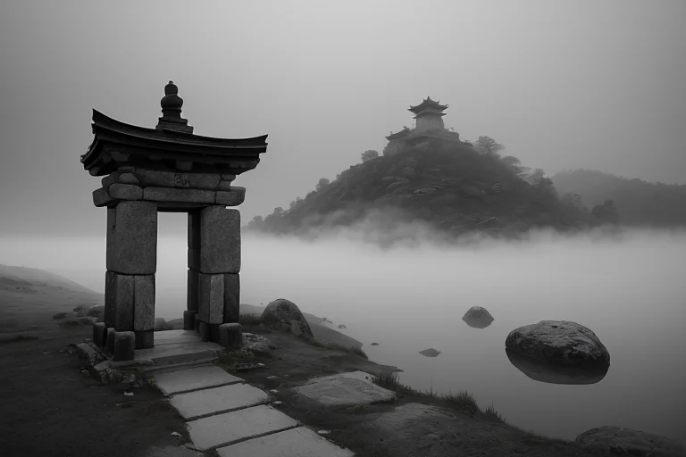
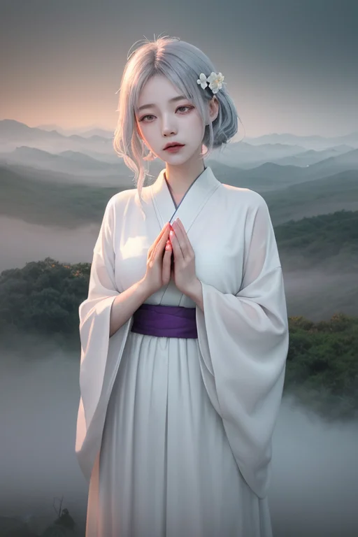
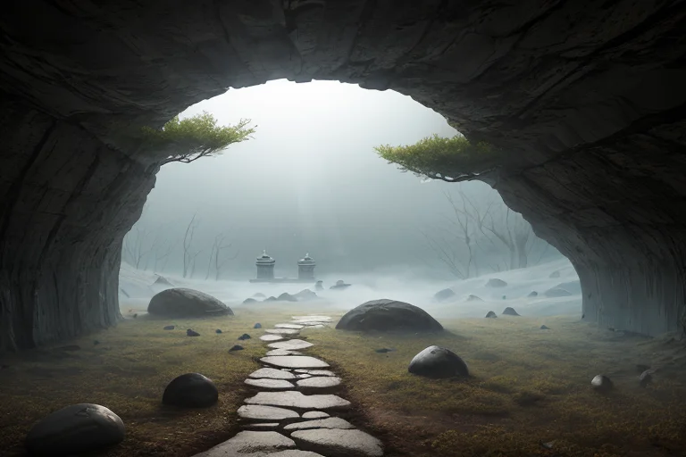
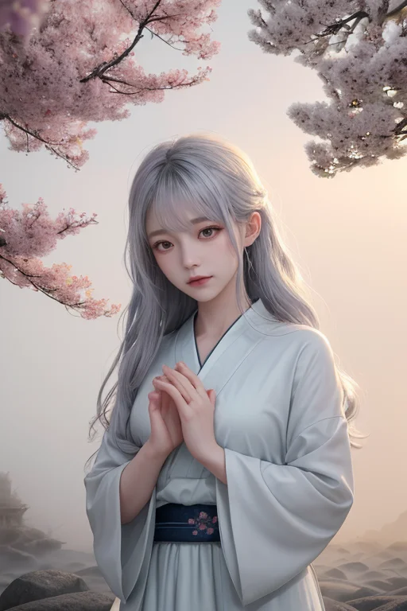
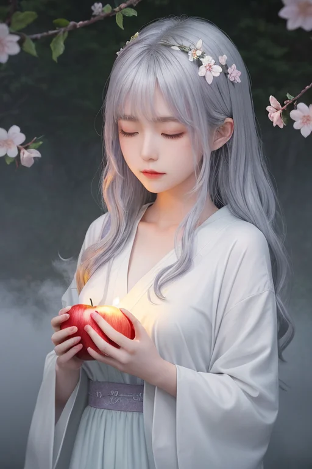

第一章 現実の青森
あなたはまだ気づいていない。この土地にも、王がいることを。
恐山の霊場は、深い霧に包まれていた。賽の河原の石積みは、訪れる者の祈りで少しずつ高まり、風雨で少しずつ崩れる。イタコの口寄せの声は、冷たい空気を震わせて消えていく。ここは、現世とあの世の境。人々は「終わり」を前に佇み、手を合わせる。
その静寂の只中に、一人の青年が立っていた。黒いコートの襟を立て、無表情で賽の河原を見つめる。彼こそが、この地に遣わされた王、アオモリア・レヴナントである。彼の目には、この土地に蓄積された「終わり」への感情―別れ、喪失、諦め―が、深紅の霧のように漂って見える。彼はそれを消すことはできない。王に許されたのは、ほんのわずかな「調整」だけだ。崩れかけた石積みが、次の参拝者の手が届く位置に留まるよう、微かに風向きを変える。過ぎ去ったものへの執着が、静かな受容へと少しだけ昇華するよう、感情の密度を整える。
彼は問う。この場所に集う切なさは、果たして真の終焉なのか、と。答えはまだ霧の中にある。

第二章 歪みの兆候
恐山の霊場は、イタコの低く響く口寄せの声と、参拝者たちの無言の祈りで満ちていた。その祈りのエネルギーは、通常、静かな湖のように安定している。しかし今日、アオモリアはその表面に、かすかな、しかし確かな「歪み」の波紋を感知した。それは、あまりにも強すぎる「別れ」への執着から生まれる、澱のようなものだった。未練が、祈りという形でこの地に蓄積し、本来の静寂を濁らせ始めている。
「終わりを受け入れられない思いが、地脈に負荷をかけています」
霧の妖精ネブラが、そっと囁いた。その声は、冷たい風に混じる記憶のようだった。
アオモリアは目を閉じ、感覚を研ぎ澄ます。彼にできるのは、この澱が地中深くの歪み＝地震のエネルギーと共鳴し、増幅するのを、ほんの一瞬遅らせることだけだ。彼は意識を集中させ、強すぎる未練の感情の流れを、霧の中へと少しだけ分散させた。祈りの声は変わらない。ただ、かつてここで別れたある女性の頬を、理由もなく温かい霧の粒が触れた。彼女はふと、押し殺していた嗚咽を零した。それは、執着の解放の始まりだった。
終わりは、本当に終わりか？ 彼は問いを抱えながら、澱が少しずつ拡散するのを、静かに見守った。

第三章 沈黙の対峙
恐山の静寂は、王の内側に響く。彼は、イタコの巫女たちが媒介する「未練」の澱を、霧へと拡散させる微調整を続けていた。その作業は、彼自身に問いを植えつける。終わりを前にした生の執着は、ただの「歪み」なのか。それとも、守るべき「何か」なのか。
彼はかつて、津軽海峡を隔てた地に、青函トンネルという「終わりではない道」が開通する瞬間を微調整した。海底の岩盤が呻く圧力を、ほんの少し分散させ、工事関係者の不安を、確信へと変える一瞬を遅らせただけだ。あの時、彼は「終わり」を回避する技術の力に、淡い感慨を覚えた。しかし恐山の霊気は、より根源的だった。技術では癒せない、心の亀裂がここにはある。
ネブラがそっと傍らに立つ。「あなたもまた、『終わり』を恐れていますか」。霧の妖精の声は、彼自身の内なる声のようだ。彼は答えない。感情を持たないはずの自分が、この問いに胸を締め付けられる感覚を、どう名付ければよいのか。王としての役割は、終わりを前にした「静寂」を保つこと。だが、この地で育まれた感情は、静寂の底で微かに沸き立つ、林檎の種が地中で割れるような音を、彼に聞かせ始めていた。

第四章 静寂の種
恐山の賽の河原。小石を積む音だけが、深い霧の中に吸い込まれていく。ネブラは、積み上げられた石塔の傍らに佇み、静かに語り始めた。
「ここに来る人々は、失ったものと向き合うために、石を積みます。一つ一つが、届かぬ言葉。王様、あなたは『終わり』を調整する方。でも、この積み重ねそのものが、終わりではないのです」
彼女の霧の衣が微かに揺れる。その中には、この地で紡がれてきた無数の祈りが、記憶として織り込まれている。
「イタコの口寄せも、ねぶたの炎も、燃え尽きて消えるものに、形を変えて会おうとする人の想い。津軽三味線の音には、吹き荒れる地吹雪の先に、必ず春が来たことの記憶が刻まれています。終わりは、次の何かへと魂を安定させる、深い息のようなもの。あなたが感じ始めた『音』は、その種が地中で静かに膨らむ音です」
再生王は、賽の河原の無数の石を見つめた。一つとして同じ形はない。喪失は確かにある。だが、この積み重ねの行為そのものに、失われしものへの愛おしさと、それでも前に進もうとする、ごく微かな力が宿っていることを、彼は「感じた」。

第五章「微調整と余韻」
恐山の賽の河原を後にした再生王は、静かに弘前城へと向かった。桜の季節は過ぎ、深緑に包まれた天守が、静かな時間を湛えている。彼は石垣の根元に手を触れた。ここには、津軽藩の幾多の終わりと再生の歴史が、地層のように積もっていた。彼の役割は、その地層の「歪み」を微調整することだ。巨大な災害を消す力はない。しかし、石垣の一部の緩みが、観光客の足を滑らせる「偶然」を、ほんの一瞬、遅らせることができる。それは、誰にも気づかれない、目に見えない精神波のような調整である。
ネブラが霧のように傍らに現れ、そっと王の背中に寄り添った。王は感じた。この土地の人々が、終わりを恐れず、むしろねぶたのように燃やし、林檎のように実らせてきた、静かな再生のリズムを。地吹雪の厳しさも、イタコの口寄せの哀しみも、すべては循環の一部だった。
彼は目を閉じた。青函トンネルを貫く長い闇の先に、必ず光があることを、この地は知っている。終わりは、次の始まりへと魂を静かに回す、深い呼吸のようなもの。彼が感じた「音」は、その循環が滞りなく回り続ける、微かな調律の音だった。
あなたの町にも、王がいる。